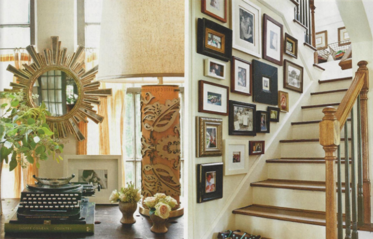
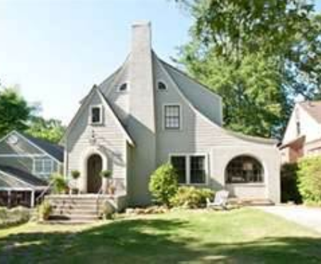

.png)
.PNG)
.PNG)
.PNG)
.PNG)
.PNG)
.JPG)
.JPG)
.PNG)
.PNG)


Southern Living January, 2012
I am usually very simple and traditional in my taste in home design. I don’t often wander off into the lands of trendy or modern, but back in 2007, when Cottage Living magazine was still alive, I fell in love with a little cottage…like many other people did, too. It belonged to one of the Cottage Living style editors, Fran Keenan. Do you remember this one with its nice fall gourds by the front door ?
I am not sure why it spoke to me. Perhaps it was the great mix of traditional with modern accents, or maybe it was the warm color scheme that just seemed so cozy. Whatever it was, it surprised me by how much I liked it. I even started planning out how to change my house into spaces that resembled those in her Birmingham home. But then I computed how much money and time it would take to actually do it, and I abandoned that idea (but I still have the magazine article in my files for “one day.”)
Last December my January issue of Southern Living magazine arrived. I was casually flipping through it, and then I hit page 74. Before I even read the article’s title, I thought, “Wait a minute. I know those chairs. Those are Fran Keenan’s chairs!” Sure enough, it was a feature on her latest home called, Warm All Over. (Love that title!) Here is the newer home in the feature – no longer that little cottage.

I especially liked her old living room in the Cottage Living feature – the green walls, the neutral color scheme, the accents of orange, the ribbon trim on the drapes, and the flamestitch fabric on the chairs.
Now take a look at her new living room. I love how she was able to incorporate her previous home’s furniture, and it still seems perfect today – even five years later.
 Southern Living magazine January, 2012
Southern Living magazine January, 2012
The dining space in the old cottage was warm and cozy thanks to the chocolate brown walls. (I thought long and hard about painting mine that color!)
Here is another photo of the dining area in a feature on entertaining also from Cottage Living. The big wing chairs are not being used at the table for this dinner.
Wouldn’t you like to see a little more from the entertaining article? The centerpiece brings in more of the chocolate brown color, and I like the placecards with the ribbons run through the back.
I want you to notice this bench and look for it in the new dining room in a minute. myhomeideas.com
myhomeideas.com
Here is the dining room in the Southern Living feature. It is a much much bigger space, but the furniture still works in this room. Now look for that bench. Do you see it?
 acuratedlifestyle.blogspot.com
acuratedlifestyle.blogspot.com
In her old cottage these dining room chairs sported little slipcovers on the back.
Now take a look at them in the new dining rom. They have a different fabric, but it is still in the same green, brown, neutral colorway.
 acuratedlifestyle.blogspot.com
acuratedlifestyle.blogspot.com
Perhaps one of the most copied spaces from the little cottage was her daughter, Ella’s room – with its large letters on the wall and its overscaled houndstooth rocker.

Since then, the Keenan family has grown by an additional daughter and a son. The two daughters share this space in the new house.

Southern Living, January 2012
Do you see where the houndstooth rocker ended up? This is the room for their youngest child, Wilkes. Southern Living, January 2012
Southern Living, January 2012
I did not think the master bedroom appeared in the original article, but a reader reminded that there was a photograph there. (Thanks Angela!) Here is the pretty yellow room.

Cottage Living
Here is the updated master bedroom in the Southern Living feature. I like the bright shade of green used on the walls here.
 Southern Living, January 2012
Southern Living, January 2012
And finally, here is a neat little work area and the kitchen in the new house. Aren’t those barstools great? That desk area is in a study that was once an old side porch.
Southern Living, January 2012
I really like the new home too, and I believe it is the warmth of the colors that is drawing me to it. I thought it was fun to see how many pieces (accessories and furnishings) that she reused from the old home…sort of like playing a game of I Spy. 🙂 I hope you enjoyed playing along as we compared Fran Keenan’s style – then and now.
until next time…


.PNG)
I am almost certain there WAS a photo of the master bedroom in the original Cottage Living article (and obviously I really loved that house, too, if I can remember that).
—————————————————————————
Thanks Angela! I just went back to my tear sheets and found it. You were right! I will add it to the post. It is amazing how many people remember that article. That should say something to Fran about the appeal of her work!
Kelly
Oh how is miss Cottage Living. So many people blog about missing it, how were they not selling enough copies?? Fran’s style reminds me a lot of Heather Chadduck’s.
——————————————————————-
Missy – I don’t know how in the world they weren’t selling enough copies. I had a subscription, and I thought everyone else did too! Her style is very similar to Heather Chadduck’s, but it seems that Heather has gotten a lot more publicity than Fran has. I have seen more of Fran’s lately though. Perhaps having 3 little children slowed her down for awhile. I can certainly understand that!
Kelly
Very fun to see both homes and how her furnishings moved from home to home! Her homes are so charming and cozy, I love it! Thanks for the fun post (I’m catching up on my blog reading!)
———————————————————————-
Melissa – I’m glad you popped in on your catch up time! I bet there are other decorators out there we could do the same thing with if we did some searching. Fran’s homes are so charming…so wish she would do a blog or a website!
Kelly
What great detective work here…love both homes! Such charm and character in each and I adore the relaxed and livable feel…wonderful!
———————————————————————
Detective work..that’s a fun way to put it! I like both houses too. They do seem very livable for a family with 3 growing children. Thank you for visiting the blog today. Hope you have a good weekend!
Kelly
I LOVE her style! I always love rustic touches and she does it really well 🙂
———————————————————————
Lindsay – I like her style, too and especially her colors. I wish we could see more of her work in magazines…or…she needs a blog!! Thanks for visiting here today.
Kelly
It’s so neat to see the old and new house side-but-side! I swear I’ve seen some of the older pics of Fran’s house in Cottages and Bungalows magazine as well!
————————————————————————-
Sarah – It is quite possible that you have seen pictures of the older one in another magazine. It seems like they all make their rounds on some of the same people, doesn’t it? You have a good memory!
Kelly
Love seeing the changes that Fran made… what fun (and observant!) for you to have discovered both articles showing the changes. I love the little cottage and the changes are so appropriate for a growing family but staying true to the feel of the original. Love the swoop of the new roofline… curves are everything!
Thanks, Kelly, for another great post!
Cath
————————————————————————–
Cath – I’m glad you liked seeing both of the cottages. It was a lot of fun to me to be able to put them “side by side” (so to speak) to compare what she had reused. I’m new sure if the “newest” one is still their current residence. The photo of it came from a “for sale by owner” site, so I wonder if they have another new home to share. Thank you for reading again!
Kelly
I could move right in to either one! So many ideas to think about! As always, your posts are great!
———————————————————————-
Wanda – I could live in either one too, and yes, she is a good one to get ideas from. I don’t know why she does not get the recognition that so many other decorators/designers do today. That is why I was so thrilled to see the article on her work. Thank you for always leaving me a sweet compliment about the posts!
Kelly
Kelly,
Her new home is very nice, I love the front exterior of the home. It’s great to see her traditional pieces have made her new home look just as wonderful as her home featured in Cottage Living. I think it’s fun to discover a second chance to visit a second home of a talented “friend”. That happened to me with a cottage in Laguna Beach that appeared in Cottage Living magazine and then I found the same home, remodeled by the owner, in Romantic Home magazine.
Karen
———————————————————————–
Karen – It is fun to see how they reuse their former home’s things, isn’t it? Did the Laguna Beach house use many of their same furnishings? When we have moved, I always look at it as an opportunity to “start over”…new colors and new accessories…not that we bought all new things, but I certainly did not use the same wall colors and I usually had the furniture reupholstered. I am usually ready for a major change every 10 or so years! Looks like Fran is not as fickle as I am!
Kelly